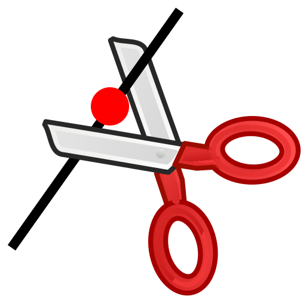

Trennen
Werkzeugleiste / Symbol:


Menü: Modifizieren - Trennen
Tastenkürzel: D, I
Kommandos: divide | di
Beschreibung:
Teilt ein Objekt auf in zwei separate Objekte.
Vorgehensweise:
- Wählen Sie das Objekt, das Sie aufteilen wollen.
- Bestimmen Sie den Trennpunkt mit der Maus. Der Trennpunkt ist
normalerweise durch den Schnittpunkt mit einem anderen Objekt bestimmt.
Wählen Sie den Fangmodus für Schnittpunkte in der CAD Werkzeugleiste um
Schnittpunkte automatisch zu fangen.